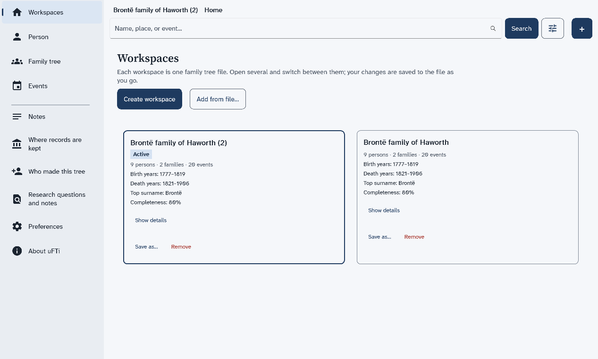
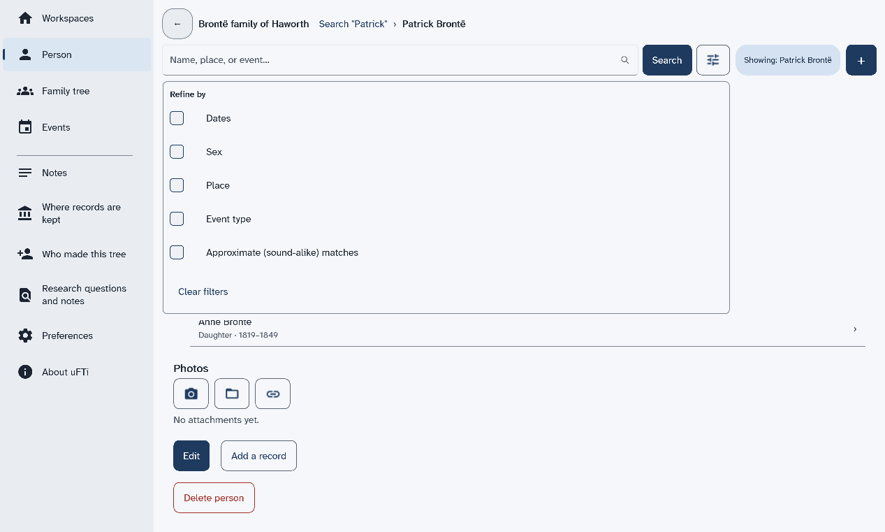
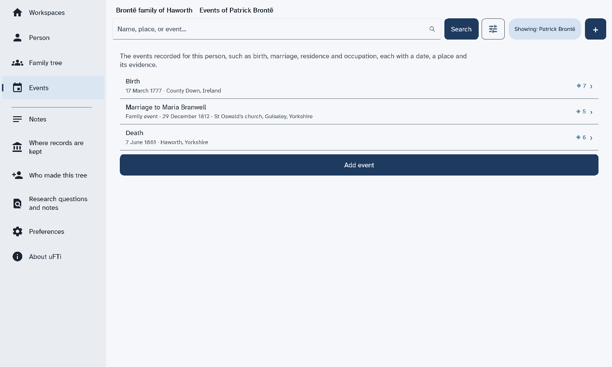
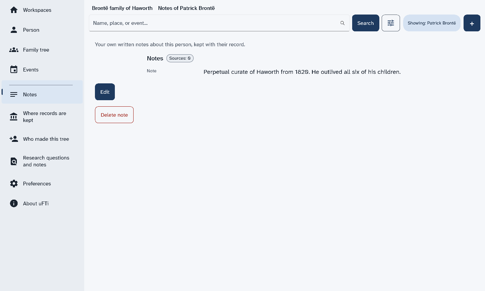
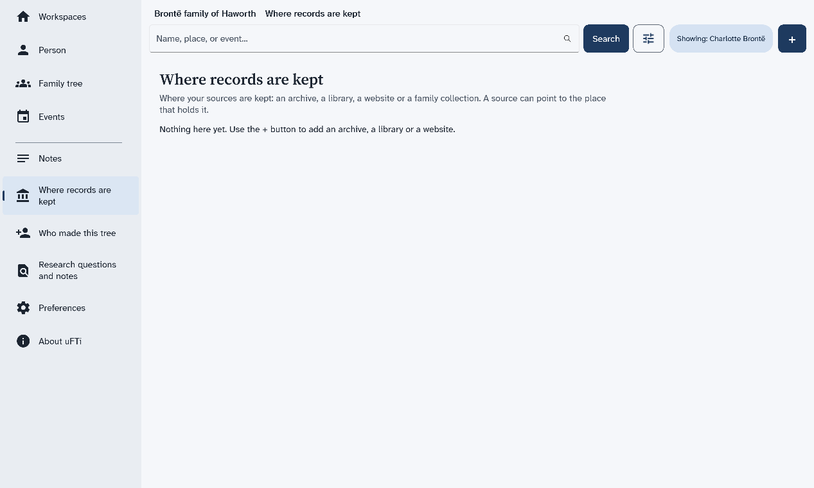
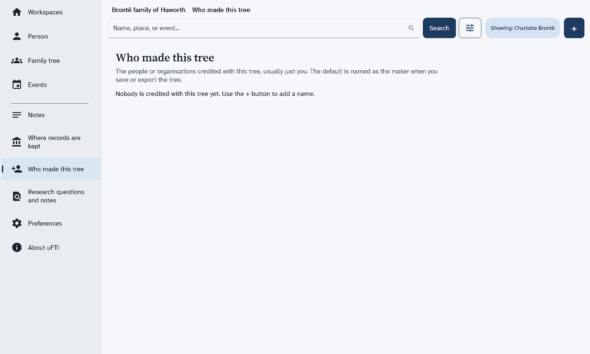
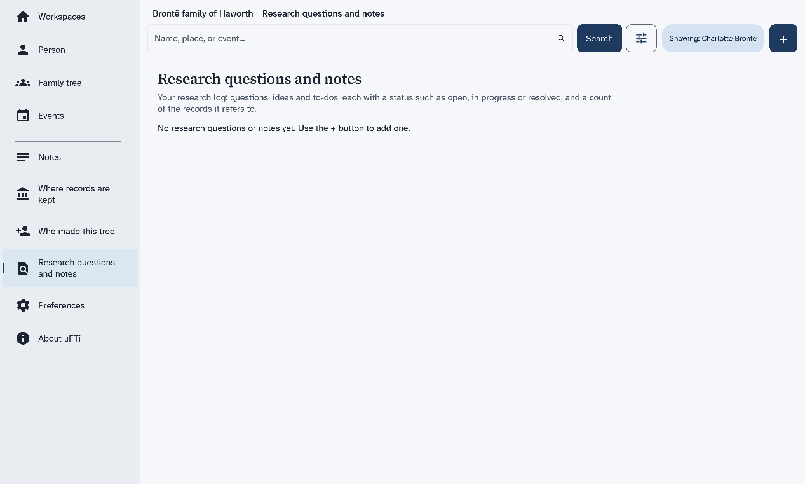
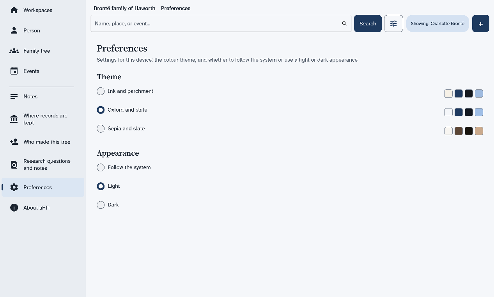

The screens of the app
What each item in the menu at the left shows, with a picture of each screen.
The menu
The menu stays at the left of every screen. Some items show your whole tree. Others show one person, the person named in the chip that starts with Showing. The chip is empty until you open someone. It clears again if you remove that person's tree.
| Menu item | What it shows | Needs a person |
|---|---|---|
| Workspaces | Your family trees, one card for each. | No |
| Person | The page of one person. | Yes |
| Family tree | A drawing of the person with parents, partners and children. | Yes |
| Events | The things that happened in that person's life. | Yes |
| Notes | Your own notes about that person. | Yes |
| Where records are kept | The archives, libraries and websites your sources come from. | No |
| Who made this tree | The people credited with the tree. | No |
| Research questions and notes | Your list of questions and ideas. | No |
| Preferences | The colours and the light or dark look. | No |
| About uFTi | The version of the app and facts about your computer. | No |
Select a personor
No person selected, it needs a person first. Search for someone, then open them. A page says no person is selected shows how.
Workspaces
This is the first screen. Each card is one family tree. It tells you how many people, families and events the tree holds. Open a family tree file and Remove a tree from the list start here.

Person
This is one person's page: their names, their birth and death, their family and their photos. Find a person shows how to open it.

Family tree and Events
See a family tree explains the tree. See the events of a person explains the list of events.

Notes
Notes are your own words about a person. Add a note to a person shows how to write one.

Where records are kept, Who made this tree and Research questions and notes
These three pages list things that belong to the whole tree. Each is empty until you add something with +. The first one lists the places where your sources are kept.



Preferences
Choose how the app looks explains the choices on this page.
